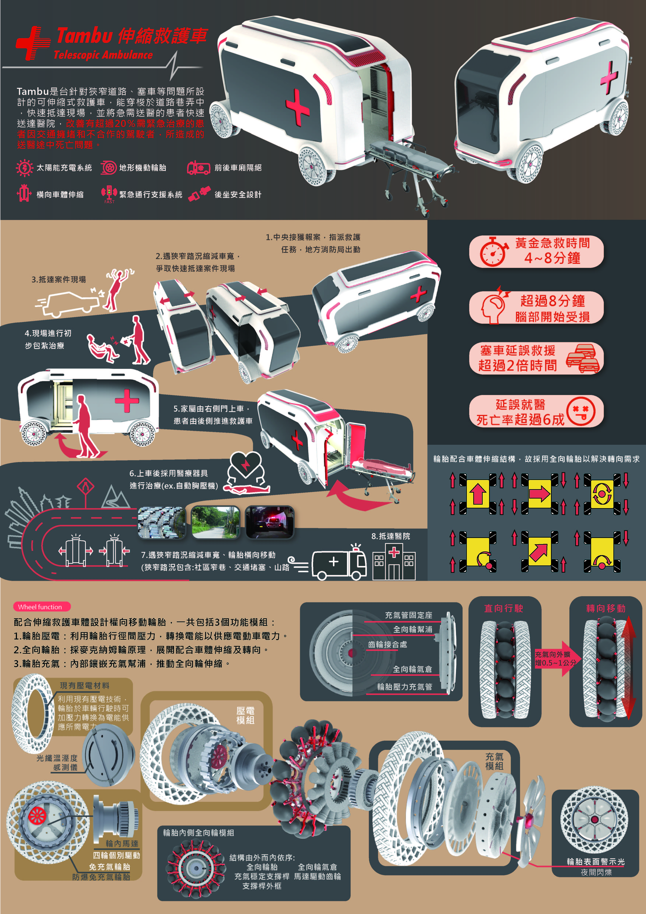
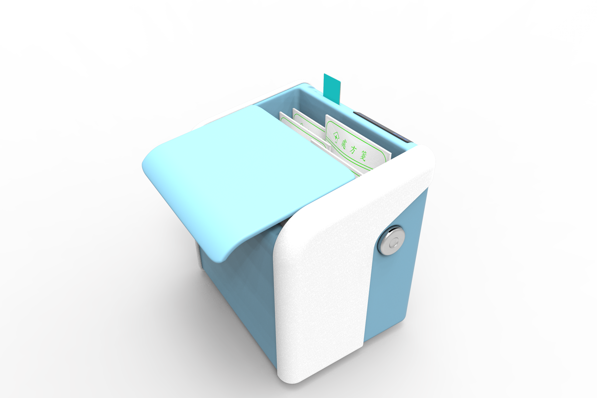

03
Portfolio
重點作品
01
醫療 · 交通工具設計
Medical & Transportation Design
Tambu 伸縮救護車
Telescopic Ambulance
針對擁擠城市與狹窄巷弄設計，車體可橫向伸縮並配備全向移動輪胎與壓電模組，有效縮短黃金救援時間，重新定義城市急救載具。
Designed for dense urban environments and narrow alleyways. The vehicle body expands laterally, equipped with omnidirectional tires and piezoelectric modules to minimize response time and redefine urban emergency vehicles.

🥇 ADC Young Ones Gold Award
02
醫療服務系統設計
Medical Service System Design
處方籤快遞
Prescription Delivery System
結合健保卡認證與專用配送藥箱，減少慢性病患者頻繁出入醫院的感染風險，建立完整的軟硬體服務流程。
Integrates NHI card authentication with a dedicated delivery case system, reducing chronic patients' hospital visit frequency and infection risk through a complete hardware-software service flow.

03
文化 · 產品設計
Cultural · Product Design
萍香 · 源 茶具設計
Ping Xiang · Yuan Tea Ware
將中華文化元素（萍水相逢、風水球、燕尾）轉化為現代個人辦公茶具，兼具實用性與文化意涵，以設計語言詮釋傳統精神。
Translates Chinese cultural motifs — chance encounters (萍水相逢), feng shui spheres, and swallow tail forms — into contemporary personal tea ware, balancing utility with cultural narrative.

04
行為設計 · 餐具
Behavioral Design · Tableware
金醋味
Jin Cu Wei — Spring Pool Glass Collaboration
以世界糧食議題為出發點設計模組化DIY釀醋平台，將賣相不佳或者即將到期的水果以簡單、直覺的 DIY 釀製成果醋，目的在於減少龐大的食物浪費、提高產值。
Design a modular DIY vinegar-making platform inspired by global food issues, turning imperfect or near-expiry fruits into fruit vinegar in a simple, intuitive way to reduce food waste and increase value.